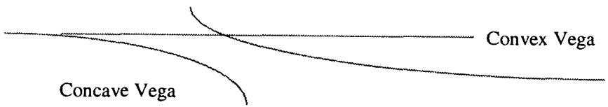

模块 F：套利中的概率排序（Probabilistic Rankings in Arbitrage）
导读：本模块要解决的问题
这一模块讲的是交易员在没有精确模型、甚至没有"sheets"（定价单）的情况下，如何靠排序给证券定价和对冲。核心工具是随机占优（stochastic dominance）：如果在所有可能事件、所有参数变化下，组合 都至少和组合 一样值钱，就记 。这给出一套无须解析公式、却严格无套利的定价边界。
对一个已经掌握无套利定价、半正定矩阵、Jensen 不等式的读者，本模块的命题层面不难。值得停下来体会的是 Taleb 把整套定价边界归结到三个层次，而它们逐级递进：
- 单资产的占优排序：低行权价 call 贵于高行权价 call、蝶式非负、跨式贵于宽跨式、长跨式贵于短跨式（扣融资后）、无障碍贵于有障碍、美式数字贵于欧式数字。这些都是从支付的逐状态比较直接读出的 。
- 相关性边界：三货币世界的隐含波动率必须满足三角不等式，等价于隐含协方差矩阵半正定，否则可以零成本甚至负成本套出一个组合。这把 Module D 的几何、第22章的 PSD 约束，落成可操作的套利构造。
- 凸性排序：在一个不稳定参数上更凸的证券，其他条件相同则更值钱。vega 对称凸的组合贵于不凸的，long vega 通过虚值期权实现贵于通过 short 障碍实现。这是污染原理和 Jensen 不等式在二阶上的排序。
笔记沿原文顺序展开：证券排序与随机占优、欧式期权规则、日历规则、障碍与数字规则、相关性规则（三角不等式、协方差矩阵半正定、套利构造）、相关性凸性规则、一般凸性规则。
一、证券排序与随机占优
证券的价值可以通过排序确立。如果证券 比 值钱、比 便宜，做市的人就能据此判断怎么给它定价。当用于"夹逼（straddling）"的比较证券价格现成可得、且彼此价格接近时，这尤其容易。
这套定价和对冲方法基于随机占优规则。当一个工具或工具组合至少和另一组一样值钱时，作者用符号 表达这个不等式。 意思是：在所有可能事件（所有参数变化）下， 都被认为至少等于 ，或者说没有任何事件下 会比 更值钱。这套规则可以在市场上已有其他价格时给期权定价，也完全可以推广到组合管理。
理论映射： 就是一阶随机占优，等价于无套利
把这个 接回理论，"在所有状态下 的支付不低于 "正是状态占优（state-by-state dominance），它强于一阶随机占优。在无套利定价下，状态占优直接推出价格排序：因为价格是状态价格密度 对支付的加权积分，
只要逐状态 且状态价格非负，价格不等式就成立。状态价格非负本身就是无套利（无免费午餐）的等价条件。所以 Taleb 的"排序定价"在数学上无懈可击：它不依赖任何分布假设或模型，只依赖支付的逐状态比较和状态价格的正性。这是为什么老交易员能不靠 sheets、只靠几个期权就给整条曲线定价。
二、欧式期权规则
记号： 是到期 、行权价 的欧式看涨， 是看跌。
行权价单调性：
同到期下，101 call 在所有情形下都比 102 call 值钱。这是显然的。同理
101 put 在所有情形下比 100 put 值钱。
蝶式规则：
两个 101 call 比"一个 100 call 加一个 102 call"便宜。意思是 100/101/102 蝶式至少值 0。理由是它处处为 0，只在"眼睛"（中心）处可能值 1。由 put-call parity，
这些规则看似简单，但交易所里那些以不用 sheets 为豪的老期权交易员，仅凭蝶式规则就能操作，用少数几个期权给整个谱定价。
跨式贵于宽跨式：
跨式（straddle）必然比宽跨式（strangle）值钱。
理论映射：蝶式非负 = 状态价格非负 = 风险中性密度非负
蝶式规则是这套排序里最深的一条。 是支付函数关于行权价的二阶差分非负，即看涨价格作为行权价的函数是凸的。取 的极限，这正是 Breeden-Litzenberger 关系：
其中 是风险中性密度。所以"蝶式非负"等价于"隐含密度非负"，等价于无套利。一个负的蝶式价格意味着隐含密度在某处为负，那是一个可以零成本套利的信号。老交易员用蝶式规则定价，本质上是在用手工保证他们报出的价格隐含一个合法的概率密度。跨式贵于宽跨式则是同一凸性的另一个切面：跨式的 gamma 集中在中心，宽跨式被掏空了中间，污染原理要求中心那块价值为正。
三、日历规则
设 ，
（按现值计，扣除融资更恰当。）意思是扣融资后，较长的跨式应比较短的值钱。这条规则对"serial"期权（写在单一期货上的期权，如 3 个月期货上的 1 月/2 月期权）总成立。它不无条件适用于标的 不"固定"的期权，这种弱点在不可替代资产（如活牛）上加剧（当一个证券无法被换成更长到期时会出现例外）。
理论映射：时间单调性来自 optionality 的非负时间价值，但需标的可跨期复制
较长跨式贵于较短，根子在 optionality 的时间价值非负：更多时间意味着更多不确定性、更大的凸性收益，扣融资后仍为正（污染原理的时间版）。但 Taleb 的限定条件很关键，它要求标的能从短到期"换"到长到期。对 serial 期权（同一标的、不同到期），远期是同一条曲线上的点，规则严格成立。对不可替代资产（活牛、特定交割月的实物商品），不同到期的"标的"实际是不同的东西，远期之间没有干净的无套利桥接，时间单调性就可能被打破。这呼应第一章 fungibility（可替代性）的讨论：排序规则的成立依赖标的能在期限间无套利地搬运。
四、障碍与数字规则
美式数字比欧式数字值钱。"if touched"型美式数字（存续期内任意时刻触及即满足赌注）比"仅到期满足"的赌注值钱。例：一张"未来一年内证券任意时点上穿 103 即付 1 美元"的票据，比"到期日证券在 103 之上才付 1 美元"的票据值钱。
无障碍贵于有障碍：
无障碍期权总比有障碍期权值钱，因为有可能在到期前丢掉期权。
障碍越远越值钱：
双障碍贱于单障碍：
共享一个触发 时，任何单障碍期权比双障碍更值钱。
理论映射：每加一道障碍就是减一块状态价格
障碍规则全都是"减少有利状态"的占优。无障碍 call 的支付在所有 的状态都为正；加一道 knock-out 障碍后，那些"路径触碰障碍"的状态被清零，支付逐状态不增，所以价格不增。障碍越靠近现价，被清零的状态越多，价值越低。双障碍清零两侧路径，比单障碍砍掉更多状态。美式数字（if-touched）贵于欧式数字，则是反方向的同一逻辑：路径型触发"任意时刻触及即赢"包含了"到期才在线上"的所有状态再加上中途触及后又回落的状态，是状态集合的超集，所以更值钱。这把第19、20章障碍期权、第17、18章数字期权的全部定价关系，统一成"状态集合的包含关系决定价格排序"。
五、相关性规则
这些边界规则适用于平值期权，对平值（远期）跨式价格或期权隐含波动率成立。设货币 A（作 numeraire）、B、C， 记 A 对 B 这一对的波动率。
三角不等式
相关性与波动率的关系：
例：
（这条规则似乎经常被违反。）以及
它意味着给定三个证券对，它们之间的隐含波动率不能使任一隐含相关性的绝对值超过 1。进一步，由污染原理，任何期权组合都不应允许凑出一个绝对值大于 1 的相关性。
这并不构成完全套利（锁定的盈亏），因为含 numeraire 的组合 P/L 可以确定地预测，而"交叉"（对美元基础的人是 DEM-FRF）的 P/L 取决于各成分相对基础货币的表现。
隐含协方差矩阵必须半正定
基于上面的推广是：从平值期权价格隐含出的协方差矩阵必须半正定（特征值为正），这是三货币世界边界规则的推广。否则操作者就能零成本、甚至获得净收入地套出一个期权组合。设
则协方差矩阵
检查矩阵是否"干净"（无套利）很容易：波动率不可能为负，所以 必须半正定，要求特征值为正。2×2 矩阵的反常肉眼可见，20×20 就要靠计算机。
例：设 USD-DEM 波动率 14%、DEM-FRF（交叉）4%，则 USD-FRF 被限制在 10% 与 18% 之间。出了这个带，套利就可能。低于 10%，操作者可以买 USD-FRF 和 DEM-FRF 波动率、卖 USD-DEM，他完全被锁定，因为这等价于在相关性为 1 处做空相关性，两货币间相关性任何时候的下降都让他获益。同样，在 处"买入"相关性可以这样完成：14% 买 USD-DEM、4% 买 DEM-FRF、18% 卖 USD-FRF，相关性升过 就盈利。
加一个证券后矩阵变 3×3，无套利的含义就难以肉眼看出了。取资产 1=USD-DEM、2=USD-FRF、3=USD-CHF，交叉 12=DEM-FRF、13=DEM-CHF、不流动的 23=FRF-CHF。USD-DEM 15%、USD-FRF 12%、USD-CHF 18%，交叉 DEM-FRF 4%、CHF-FRF 6%、DEM-CHF 5%，其中一个特征值是负数，计算机报警，矩阵有问题，套利可以通过期权组合构造。
记住：货币足够多，就能套出套利，或至少构造一个高期望回报的交易。
正特征值规则不适用于非平值（远期）期权隐含波动率之间的比较。
理论映射：套利边界就是 PSD 约束，肉眼检查就是看
这一节把 Module D 的 Gram 矩阵几何变成了可操作的套利配方。 反解出 ，约束 直接给出 的允许带 。用例中的数字， 对应 ，即 USD-FRF（这里的角色）落在 。出带意味着 ，等价于 2×2 矩阵行列式 ，即一个负特征值，即"负方差"。高维下肉眼失效，必须算特征值，这正是 Module E 问题 5 里"大矩阵丢失半正定"的另一面：那里是估计误差被动破坏 PSD，这里是市场报价主动违反 PSD 给出套利。Taleb 的警告同样重要：这是 quasi-arbitrage（准套利）而非锁定套利，因为含 numeraire 的腿盈亏可确定，但交叉腿盈亏依赖路径，本质是"做多/做空相关性"的方向头寸，期望为正但非无风险。
六、相关性凸性规则
接下来几条源自污染原理。从前面的例子容易看出：一个建立在"高"相关性（接近 1）空头上、即应从相关性下降中获益的结构，或建立在低相关性（接近 ）多头上的结构，比一个建立在接近 0 的相关性上的结构更强，其他条件相同。
设三资产世界里，交易员付 11% 买 USD-FRF、付 4% 买 DEM-FRF、以 14% 卖 USD-DEM。他实际支出相当于一个波动率，即在 97% 处卖出了相关性。这是下式的应用：
由此反解出 。现实世界里相关性不稳定，所以一个更可能从相关性变化中获益、而非受损的交易，等级高于一个具有相反特征的交易。
理论映射：相关性凸性来自 对 的凸形
把这条接回第22章的 correlation trap。 作为 的函数是凹的（二阶导对 为负），因此卖方在 接近 1 处 short 这个凹函数、相当于 long 一个对 的凸性。当 不稳定时，由 Jensen 不等式，long 这份凸性的一方期望获益。所以"在 97% 卖相关性"的结构，在相关性随机波动时有正的期望边际，等级高于一个在 处、凸性接近零的结构。这就是为什么 Taleb 把"更可能从相关性变化中获益"的交易评为更高等级：相关性的不稳定性本身是一种可以被凸性结构收割的波动率。
七、一般凸性规则
对一个非恒定参数更凸的证券，其他条件相同，应当比对同一参数不那么凸的证券更值钱。
在平坦收益率曲线、且假设后端到期有相同波动率的环境里，持有凸性最高的债券更好。一个推论是：在 vega 上呈现对称凸性的期权组合，比不呈现凸性的同类组合更值钱。
例：两个组合都 long vega，每个波动率点 10 万美元（从 16% 降到 15%）。组合 A 的 vega 随波动率上涨而增加、抛售时减少；组合 B 的 vega 上涨时减少、抛售时增加。仅凭这一点，构成组合 A 的期权就比构成组合 B 的更值钱。宁可 vega 中性而持有 vega 的二阶导数，也不要一个在 vega 移动时亏钱的头寸（如用香草对冲数字期权所成）。后者因此被判为"劣等"。
若标的 B 比标的 A 异方差性更弱，则在标的 A 上呈对称 vega 凸性的期权组合，比在标的 B 上呈相同对称凸性的同类组合更值钱。
通过 short 障碍期权实现 long vega 的组合，不如通过虚值期权实现 long vega 的组合值钱。

图 F.1 展示凸 vega 与凹 vega 的区别：凸 vega 的组合在波动率往任一方向移动时都改善 P/L，凹 vega 则相反。
理论映射：凸性排序就是 Jensen 不等式 + 参数不稳定性的乘积
一般凸性规则是整本书的中心思想在排序层面的复述。一个对参数 凸的证券，价值 满足 （Jensen），所以当 随机波动时，凸的证券期望更高。但这个溢价的大小正比于 的方差，即参数的不稳定性。这解释了第二条规则里的"异方差性"条件：A 比 B 更异方差，意味着 A 的波动率波动更大（vvol 更高），在 A 上的 vega 凸性（volga）因此值更多钱，这与第21章复合期权的 vvol 定价完全一致。"宁可 vega 中性而持有 vega 二阶导"就是 long volga、long vvol。而"short 障碍实现 long vega 劣于虚值期权实现 long vega"，是因为障碍期权的 vega 是凹的（第20章 reverse knock-out 的 vega 在障碍附近坍缩、变号），用它做 long vega 等于 short volga，在波动率大幅移动时反受其害。图 F.1 的凸 vega 对应 long volga、凹 vega 对应 short volga。所有这些排序，本质是同一句话：在不稳定参数上做多凸性，是有正期望的；做空凸性，是劣等的。
八、本模块综述：理论与实务的对照
| Taleb 的实务命题 | 对应的理论命题 |
|---|---|
| 排序定价 | 状态占优；状态价格非负即无套利 |
| 低 strike call 贵于高 strike call | 支付逐状态单调 |
| 蝶式 | （Breeden-Litzenberger） |
| 跨式贵于宽跨式 | 中心 gamma 价值为正（污染原理） |
| 长跨式贵于短跨式（扣融资） | 时间价值非负，需标的可跨期复制（fungibility） |
| 无障碍贵于有障碍、双障碍最贱 | 每道障碍清零一块有利状态 |
| 美式数字贵于欧式数字 | if-touched 状态集是到期型的超集 |
| 三角不等式 | ；余弦定理 |
| 隐含协方差矩阵须半正定 | PSD ⟺ 无套利；负特征值 = 负方差 = 套利 |
| 落在 | 边界；行列式 |
| 准套利而非锁定套利 | 含 numeraire 腿确定、交叉腿依赖路径 |
| 相关性凸性结构更高级 | 凹 → long volga on ；Jensen |
| 对非恒定参数更凸的证券更值钱 | Jensen：溢价 参数方差 |
| 异方差更强的标的上凸性更值钱 | 凸性溢价 vvol（接第21章） |
| short 障碍做 long vega 劣于虚值期权 | 障碍 vega 凹 = short volga（接第20章） |
核心观点
第一，排序定价是无模型、却严格无套利的。 就是状态占优，配上状态价格非负，价格排序自动成立。老交易员靠蝶式规则定价，等于手工保证隐含密度合法。
第二，单资产规则全是"状态集合包含关系"的读出。行权价单调、障碍清零状态、美式数字状态更多，价格排序都从支付的逐状态比较直接得到。
第三，相关性边界就是协方差矩阵的半正定约束。隐含波动率必须能嵌进一个合法的协方差结构，否则就能套出免费组合。2×2 肉眼可见，高维要算特征值。这与 Module D、Module E 完全同源。
第四，凸性排序是全书中心思想的浓缩。在不稳定参数上做多凸性有正期望，做空凸性是劣等的，溢价正比于参数的不稳定性（vvol）。vega 对称凸优于不凸，虚值期权做 long vega 优于 short 障碍。
一句话收束
本模块最该记住的一句：不用任何模型，仅凭"在所有状态下谁的支付更高"这一条状态占优，就能给整条期权曲线定出无套利的排序——蝶式非负保证隐含密度合法，三角不等式保证协方差矩阵半正定，而在不稳定参数上做多凸性，永远是更高等级的交易。